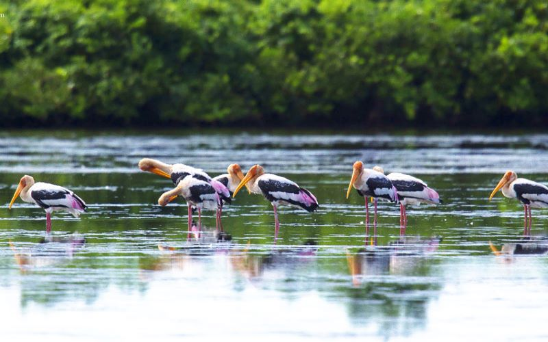

Vườn Quốc Gia Xuân Thủy: Vườn quốc gia Xuân Thủy ở Nam Định là một trong các khu rừng ngập nước quan trọng của Việt Nam, nằm ở cửa sông Ba Lạt và là điểm đến hấp dẫn không thể bỏ qua khi đến với Nam Định.Là một vườn quốc gia, nơi đây cũng có hệ sinh thái động – thực vật phong phú và thiên nhiên kì thú, không khí trong lành.
Khu du lịch sinh thái Núi ngăm: Tọa lạc trên một vị trí tuyệt đẹp, trước mặt là con sông Sắt êm đềm lơ thơ nước chảy, nhìn từ trên cao như một sợi chỉ bạc uốn lượn quanh co trước khi đổ về sông Đáy; phía sau là núi Ngăm – ngọn núi hiếm hoi giữa lòng đô thị được phủ xanh bởi rừng thông reo vi vút tạo nên khung cảnh sơn thủy hữu tình.

Khu du lịch sinh thái Cồn Lu-Cồn Ngạn: Cồn Lu là bãi bồi ngập mặn nằm bên ngoài Cồn Ngạn, có hình dạng một bàn tay người ẩn chứa nhiều vẻ đẹp có thể sẽ khiến bạn chẳng thể rời đi khi đã một lần đặt chân đến.Những tiếng chim hót, những con sóng bạc đầu từ khơi xa đổ về hoặc bạn có thể ngồi bên bờ biển lắng nghe biển hát.
